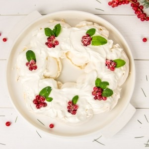
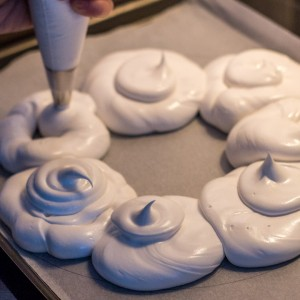
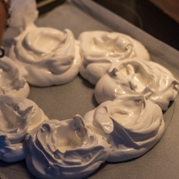
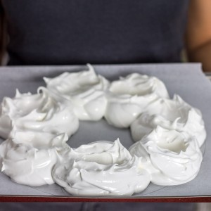
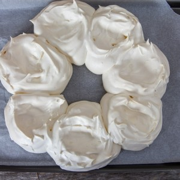

Pavlova aux fruits rouges pour Noël

Aujourd’hui c’est avec une super nouvelle recette que je vous retrouve car il s’agit d’une recette de Noël (que vous pouvez évidemment faire pour plein d’autres occasions) qui me tenait particulièrement à cœur. Je vous présente donc ma pavlova aux fruits rouges en forme de couronne de l’avent.
Je pense que je n’ai jamais photographié un de mes plats aussi vite. Nous avions un invité ce jour-là qui avait très faim et qui n’arrêtait pas de me faire rire alors c’était mal engagé! Heureusement, j’ai eu le temps de faire deux trois clichés pour partager aujourd’hui la recette avec vous.
La pavlova est ce fameux dessert bien connu en Australie et surtout en Nouvelle-Zélande (particulièrement consommée dans ces pays au moment des fêtes de Noël) qui est composée d’une meringue croustillante à l’extérieur et très moelleuse à l’intérieur (un peu comme du marshmallow). A chaque fois, tout le monde est d’ailleurs très étonné de sa texture car quand on entend meringue on pense tout de suite à « croquant », « dure » mais pas vraiment moelleuse. Bref depuis que j’ai fait ma première pavlova c’est devenu « le » dessert incontournable à la maison! La crème, la meringue, le sirop, les fruits, tout se marient parfaitement (j’en suis totalement dingue).
Cette année, je voulais vous préparer une pavlova aux fruits rouges pour Noël en forme de couronne de l’avent que j’ai ensuite arrosée d’un sirop de menthe et c’était juste parfait.
Sur mes photos vous pouvez voir quelques groseilles et des feuilles de menthe qui sont là pour représenter du houx (au cas où vous n’auriez pas remarqué^^). Au moment de servir j’ai coupé une part à chacun (équivalant à un nid de meringue) et j’avais préparé un petit saladier en plus plein de fruits rouges pour que l’on puisse en rajouter sur le dessus (un régal!). Finalement les quelques groseilles qui ont servi de décoration ont suffi car il me restait pas mal de fruits sur les bras.
Pour tout vous dire, ce week-end je vais refaire cette pavlova en version « mini couronne de l’avent » mais que je remplirai de fruits rouges et je viendrai vous mettre la photo en suivant pour que vous vous fassiez une idée de ce que ça peut donner si vous voulez la remplir de fruits!
En attendant mes minis pavlova, je vous laisse découvrir la recette (vous allez voir il n’y a rien de très compliqué, il faut juste un peu de patience) et si vous la réalisez pour Noël, n’hésitez pas à repasser par ici et à partager vos impressions 🙂
Ingrédients
- Blanc d'oeuf à temp ambiante - 4
- Sucre extra fin - 220g
- Jus de citron - 1càc
- Farine de maïs - 1 càs
- Extrait de vanille - 1/2 càc
- Sucre glace - 1 càs
- Mascarpone - 2 càs
- Crème fleurette entière - 300ml
- Menthe - 1/2 bouquet
- Eau - 225ml
- Sucre en poudre - 200g
- Groseilles
- Menthe
- Autres fruits rouges de votre choix
Instructions
- Préchauffer le four à 170°
- Fouetter les blancs en neige
- Quand vos blancs sont souples, ajouter le sucre petit à petit tout en continuant de battre Dans les ingrédients j'ai précisé qu'il fallait du sucre extra fin. Si vous n'en avez pas, mixez votre sucre afin de l'affiner. C'est ce que je fais à chaque fois et ça marche très bien
- Continuer de battre jusqu'à l'obtention d'une jolie meringue brillante (vous devez observer la formation d'un bec d'oiseau) Compter 5 bonnes minutes
- Pincer la meringue entre vos doigts et si vous sentez encore des grains de sucre, fouettez à nouveau. Le sucre doit être totalement dissous (sinon il risque de suinter à la cuisson et la pavlova sera ratée!)
- Dans un petit bol, mélanger le jus de citron, la farine et l'extrait de vanille
- Verser ce mélange sur la meringue et mélanger délicatement
- Sur votre plaque à pâtisserie (recouverte de papier sulfurisé), formez à l'aide d'une maryse, plusieurs ronds les uns collés aux autres (je me suis aidée d'une poche à douille)
- Creuser légèrement la meringue à l'aide d'une petite cuillère pour former un nid mais conservez bien de la hauteur (et ne faites pas de nids trop profonds non plus, il faut un fond de meringue)
- Baisser la température du four à 120° et enfournez pendant 55 minutes (la diminution de température au moment d'enfourner va permettre à la pavlova d'avoir une croûte croustillante et un intérieur bien moelleux)
- Dans le bol de votre robot (ou à l'aide de batteurs électriques), monter votre crème en chantilly avec le mascarpone
- Ajouter le sucre glace petit à petit en continuant de battre à chaque ajout. Pour ne pas rater votre chantilly : quinze/trente minutes avant de monter la crème, placer vos fouets ou votre fouet au congélateur (il faut également que votre crème liquide soit bien au frais) et vous êtes assurés à 100% que votre crème montera!!
- Au centre de vos nids de meringue, étaler une couche de crème
- Ajouter les fruits rouges (groseilles, framboises etc...) et les feuilles de menthe Pour faire du houx j'ai utilisé quelques groseilles que j'ai roulées dans du sucre pour leur donner un aspect gelé (pour coller à l'esprit de Noël) que j'ai posé sur ma pavlova et j'ai ajouté les feuilles de menthe autour
- Porter l'eau à ébullition avec le sucre
- Jeter la menthe dedans et laisser infuser 3 à 4 min à feu moyen
- Enlever les feuilles et laisser réduire le sirop pour qu'il ait une consistance épaisse (5 min environ)
- Réserver
- Au moment de servir, arrosez la pavlova du sirop




Les tips de la communauté
Couronne de pavlova magnifique et festive. Recette bien expliquée qui donne confiance aux lecteurs, avec quelques questions techniques mais globalement très apprécié pour les fêtes.
Astuces
- Explications simples qui donnent confiance même aux débutants
- Préparation le matin possible pour service le midi
- Conserver au frais jusqu'au moment de servir
- Format couronne très festif et présenté très agréablement
Variantes suggérées
- Adapter les fruits selon allergies ou préférences (autre que fruits rouges)
Ajustements signalés
- Ne pas faire la meringue la veille, elle s'effondrerait
- Risque de craquage si problème de cuisson ou température